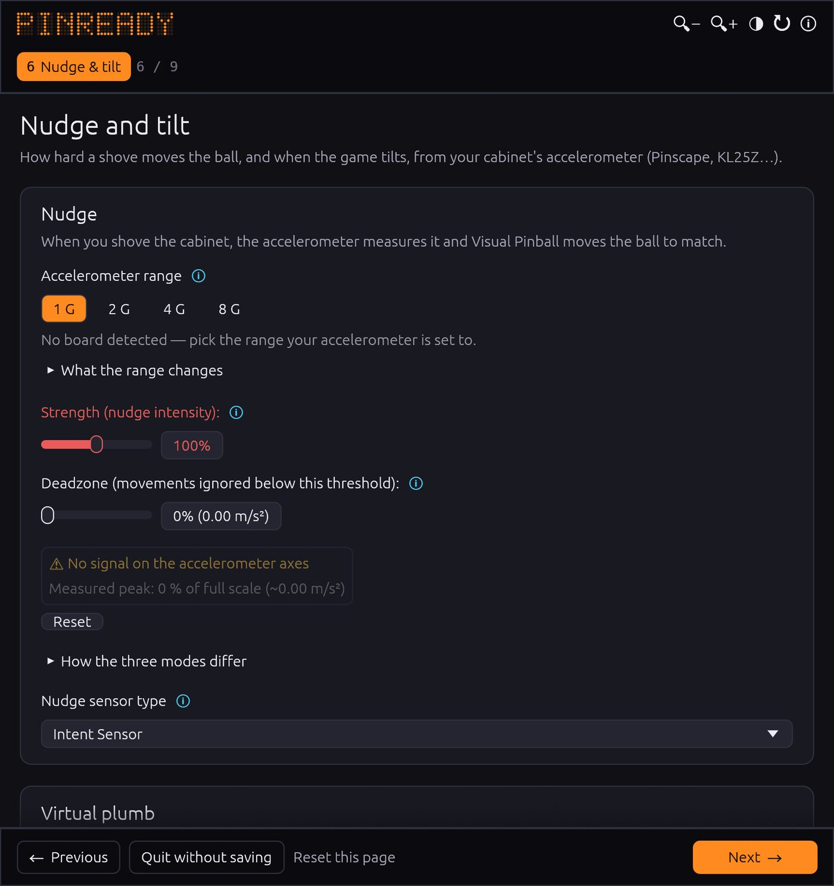

セットアップウィザード
PinReady を初めて起動すると、9ページのウィザードが案内してくれます。各項目には小さな情報マークが付いています。マウスを重ねるか（キャビネットではクリックして）、やさしい言葉の説明を読めます。
回答は VPinballX.ini（Visual Pinball の設定ファイル）に書き込まれ、そのファイル内のコメントは残されます。ファイルがまだない場合、PinReady はまず Visual Pinball に完全な初期設定ファイルを作らせ、そこにあなたの選択を追加します。ウィザードは、ランチャーの設定ボタンか pinready --config でいつでも開き直せます。どの項目にも現在の設定が表示されます。ほとんどの設定は、プレイ中でも F12 の Visual Pinball メニューから変更できます。
設定をリセットすると、すべての回答が破棄され、グローバルな VPinballX.ini が VPinballX.ini.reset-backup として退避され、最初のページからやり直しになります。テーブルには手を付けません。
1. 画面

最初のページには、検出されたシステム（例：Ubuntu 24.04 LTS · X11 · GNOME）が表示されます。これにより、不具合の報告にいつも環境の情報が添えられます。ここでインターフェースの言語を選べるほか、必要なら Visual Pinball をインストールできます。
- 画面の数：通常のパソコンなら1、本格的な pincab（プレイフィールド、バックグラス、DMD、必要に応じてトッパー）なら3または4。
- 役割：各ディスプレイが、名前、解像度、リフレッシュレート（Hz）、実寸サイズとともに一覧表示されます。PinReady は画面の大きさから役割を提案します。一番大きいものがプレイフィールド、次にバックグラス、DMD、トッパーの順です。役割はリストから変更でき、画面を使用しないに設定することもできます。
- 表示モード：デスクトップ（ウィンドウ表示。通常のパソコン向け）、キャビネット（平らに寝かせた画面向けにプレイフィールドを描画し、バックグラスと DMD はそれぞれ専用の画面に表示）、1画面フル（縦長の1つの画面にプレイフィールドとバックグラスを表示）。画面が2つ以上になるとキャビネットに切り替わりますが、あとから変更もできます。
- 外付け DMD デバイス（ZeDMD、PinDMD など）：実機のスコア表示器をお持ちならチェックを入れてください。テーブルの起動時に Visual Pinball が検出します。
- タッチスクリーンを無効にする：VPX のタッチオーバーレイをオフにします。プレイフィールドがタッチスクリーンではない場合や、キャビネットをリモートで操作する場合に便利です。
- キャビネットの寸法：ロックバーの幅と高さ、プレイフィールドの傾斜、あなたの身長と立つ位置。図のハンドルをドラッグするか、数値を入力してください。3Dビューに正しい遠近感を与えるための値です。
2. 映像

プレイフィールドのグラフィック設定です。このページのアドバイスは、まず初期設定で始めて、お使いのマシンに合わせて調整することです。
- 同期：同期なし、垂直同期、適応型同期、フレームペーシング（Visual Pinball の初期設定）。それぞれの選択肢に、なめらかさと入力遅延のトレードオフが説明されています。
- FPS 制限：初期設定は最大で、プレイフィールド画面のリフレッシュレートに合わせます。画面が表示できる速さを超えてフレームを描くことはありません。独自の上限を決めるには数値を指定を押してください。お使いの画面がページの表示より高い性能を持っている場合は、先にシステムのディスプレイ設定でリフレッシュレートを変更してから（PinReady では変更できません）、ここに戻ってきてください。
- テクスチャを圧縮（初期設定でオン）：テーブルの画像をまとめて、グラフィックメモリの使用量を減らします。代わりに、各テーブルの初回の読み込みが少し長くなります。
- 画質：スーパーサンプリング、MSAA、ポストプロセスのアンチエイリアシング（FXAA など）、シャープネス、反射、テクスチャの最大サイズ。
- FPS を表示（初期設定でオン）：ゲーム中にフレームカウンターを表示します。セットアップ直後に設定を確かめるのに便利です。
- ボールを真円に（初期設定でオン）：ボールが速く動いたときに、少し卵形に見えるのを防ぎます。見た目だけの設定です。
- 視覚効果：やわらかい影（アンビエントオクルージョン）、明るいライトのまわりのにじみ、ボールのモーションブラー、斜めから見たときのくっきりしたテクスチャ、テーブル全体の反射、先行描画フレーム、ボールとランプのなめらかさ。それぞれに推奨値が表示されます。ゲームがカクつくときは、リストの下にあるものから先にオフにしてください。
3. 3D

オプションのブロックが2つあります。キャビネットには不要なため、どちらも初期設定ではオフです。
- バーチャルリアリティ（VR）：ヘッドセットでプレイします。ヘッドセットと、パソコン上で動作する VR プログラム（SteamVR や Monado などの OpenXR ランタイム）が必要です。有効にすると、VR を開始するタイミング、ヘッドセットのリフレッシュレート、その間にデスクトップに表示する内容、音声の出力先を選べます。
- 立体視 3D：3Dテレビや3Dメガネ向けの立体映像です。有効にすると、3D の形式を選び、目の間隔、明るさ、色の彩度を調整できます。
4. 操作系

Visual Pinball の各操作には、キーボードとジョイスティックの2つの列があり、両方を並べて使えます。割り当てをクリックしてキーかボタンを押してください。キーならキーボードの列に、ジョイスティックのボタンならジョイスティックの列に設定されます。すべての入力を自動で割り当てを使うと、すべての操作を一度の流れで順に設定できます。主要な操作（フリッパー、MagnaSave、スタート、クレジット、ボールの発射など）が先頭に表示され、上級者向けの操作はワンクリックで開けます。ほかの操作に使われているキーを選ぶと、PinReady が警告します。
ピンボール用コントローラーボード。Pinscape KL25Z、Pinscape Pico、DudesCab、PinOne のいずれかのボードが検出されると、PinReady は対応するプロファイルを選び、ジョイスティックの列にボードの出荷時のボタン配置を入力します。プランジャーと加速度センサーによるナッジは、Visual Pinball が自動的に処理します。すべてのボタンを自分で割り当てたいときはなしを選んでください。検出されたゲームパッドを、フリッパー、プランジャー、ナッジに使うこともできます。
KL25Z（KL Shield V5.1 / Brain / Rig Master）
| ボタン | ボード上の表記 | VPX の操作 |
|---|---|---|
| 0 | START | Start |
| 1 | EXTRA-B | ExtraBall |
| 2 | COIN1 | Credit1 |
| 3 | COIN2 | Credit2 |
| 4 | L BALL | LaunchBall |
| 5 | EXIT | ExitGame |
| 7 | L FLIPP | LeftFlipper + LeftStagedFlipper |
| 8 | R FLIPP | RightFlipper + RightStagedFlipper |
| 9 | L MAGNA | LeftMagna |
| 10 | R MAGNA | RightMagna |
| 11 | FIRE | Lockbar |
| 13 | DOOR | CoinDoor |
| 14 | SERVICE EXIT | Service1 |
| 15 | SERVICE - | Service2 |
| 16 | SERVICE + | Service3 |
| 17 | ENTER | Service4 |
| 19 | VOL- | VolumeDown |
| 20 | VOL+ | VolumeUp |
Pinscape Pico (OpenPinballDevice)
| ボタン | ボード上の表記 | VPX の操作 |
|---|---|---|
| 0 | スタート | Start |
| 1 | 終了 | ExitGame |
| 2 | エクストラボール | ExtraBall |
| 3 | コイン1 | Credit1 |
| 4 | コイン2 | Credit2 |
| 5 | コイン3 | Credit3 |
| 6 | コイン4 | Credit4 |
| 7 | ボール発射 | LaunchBall |
| 8 | ファイア | Lockbar |
| 9 | 左フリッパー | LeftFlipper |
| 10 | 右フリッパー | RightFlipper |
| 11 | 左上フリッパー | LeftStagedFlipper |
| 12 | 右上フリッパー | RightStagedFlipper |
| 13 | 左 MagnaSave | LeftMagna |
| 14 | 右 MagnaSave | RightMagna |
| 16 | スラムティルト | SlamTilt |
| 17 | コインドア | CoinDoor |
| 18 | サービス キャンセル | Service1 |
| 19 | サービス ダウン | Service2 |
| 20 | サービス アップ | Service3 |
| 21 | サービス エンター | Service4 |
| 22 | 左ナッジ | LeftNudge |
| 23 | 前方ナッジ | CenterNudge |
| 24 | 右ナッジ | RightNudge |
| 25 | 音量アップ | VolumeUp |
| 26 | 音量ダウン | VolumeDown |
DudesCab (Arnoz)
| ボタン | ボード上の表記 | VPX の操作 |
|---|---|---|
| 0 | スタート | Start |
| 1 | ExtraBall | ExtraBall |
| 2 | Coin1 | Credit1 |
| 3 | Coin2 | Credit2 |
| 4 | LaunchBall | LaunchBall |
| 5 | Return | ExitGame |
| 7 | Flipper Left | LeftFlipper + LeftStagedFlipper |
| 8 | Flipper Right | RightFlipper + RightStagedFlipper |
| 9 | Magna Left | LeftMagna |
| 10 | Magna Right | RightMagna |
| 12 | ファイア | Lockbar |
| 13 | Door | CoinDoor |
| 14 | ROM Exit | Service1 |
| 15 | ROM - | Service2 |
| 16 | ROM + | Service3 |
| 17 | ROM Enter | Service4 |
| 18 | VOL - | VolumeDown |
| 19 | VOL + | VolumeUp |
CSD PinOne
| ボタン | ボード上の表記 | VPX の操作 |
|---|---|---|
| 0 | VPX 1 | RightFlipper |
| 1 | VPX 2 | RightMagna |
| 2 | VPX 3 | LeftFlipper |
| 3 | VPX 4 | LeftMagna |
| 4 | VPX 5 | ExtraBall |
| 5 | VPX 6 | Start |
| 6 | VPX 7 | Credit1 |
| 7 | VPX 8 | ExitGame |
| 8 | VPX 9 | Lockbar |
| 15 | VPX 16 | VolumeUp |
| 16 | VPX 17 | VolumeDown |
| 17 | VPX 18 | CoinDoor |
| 18 | VPX 19 | Service1 |
| 19 | VPX 20 | Service2 |
| 20 | VPX 21 | Service3 |
| 21 | VPX 22 | Service4 |
| 23 | VPX 24 | LaunchBall |
ボタン番号は SDL が報告するもので、0から数えます。プロファイルで割り当てられていないボタンは表示されません。
5. アクセサリー

DOF エフェクト（ライトとトイ）
VPX 10.8.1 スタンドアロンには DOF（Direct Output Framework）が組み込まれており、キャビネットのソレノイド、ライト、シェイカーモーター、ノッカー、ビーコンなどを制御します。必要なのは、お使いのハードウェアを記述した設定だけです。このページが手順を案内します。
- VPUniverse ConfigTool で無料のアカウントを作成します。
- お使いのキャビネットに合ったテーブルを作成し、その出力システム（Pinscape、LedWiz、PinOne、DudesCab、PacLed、TeensyStripController など）を追加して、デバイスを各出力に割り当てます。
- 生成をクリックし、zip をダウンロードして対象のフォルダーに展開します。ファイルマネージャーでフォルダーを開くボタンを押すと、そこへ移動できます。
- DOF をオンにします。Visual Pinball はすべてのプラグインを無効にした状態で出荷されているため、オンにするまでゲーム中に何も動作しません。
PinReady は、USB 経由で出力ボードを探し、ConfigTool でどのコントローラータイプを選べばよいかを教えることもできます。Linux では、ボードへのアクセスを許可する udev ルールの表示、コピー、インストールができます。各出力を順番にパルス出力する出力テスターは、安全停止機能つきですが、現時点ではシミュレーター上でのみ動作します。
ヘッドトラッキング
バックグラスやトッパーに Kinect やカメラを備えたキャビネット向けの機能で、テーブルの遠近感があなたの頭の動きに合わせて変わります。ワンクリックでヘッドトラッキングのプラグインとデモをダウンロードし、プラグインを有効にして、必要なウィンドウビューモードに Visual Pinball を切り替え、デモを開きます。そこでカメラのドライバーをインストールし、追跡されていることを確認できます。Intel の Mac では利用できません。
6. ティルト / ナッジ


キャビネットを揺らす（ナッジする）動きを検出する加速度センサーの設定です。
- ナッジセンサーの種類：ゲームコントローラーはゲームパッドのスティック用。インテントセンサーは Pinscape や DudesCab のような加速度センサーボードを備えたキャビネット用で、小さな振動は無視し、本当に押した動きだけをナッジにします。キャビネットセンサーは、反応が速くノイズの少ないセンサー用で、測定値がそのまま使われます。
- 強さ：揺らしたときにボールをどれだけ強く押すか。実際に調整する価値があるのは、ほぼこの設定だけです。
- 不感帯：このレベルを下回るごく小さな値は無視されるため、振動やセンサーのノイズでボールが動くことはありません。
- 加速度センサーの範囲：好みではなく、お使いのボードで決まる事実です。ボードが範囲を公開している場合、PinReady はボードから読み取り、選んだ値が合っていなければ警告します。
- TILT のしきい値：ゲームがティルトと判定するまでに、どれだけ強くナッジできるか。
キャビネットを揺らして、リアルタイム表示を見てください。1回の揺れが点で表示され、不感帯、ナッジのしきい値、ティルトを示すリングと比べられます。赤いリングを超えると TILT です。PinReady は測定したピーク値も記録し、ティルト角度がセンサーの届く範囲を外れているときは知らせてくれます。また、ボードの取り付け向きの確認もお願いします。向きが逆だと、ナッジの方向が入れ替わったり反転したりするためです。
このページでは、VPX 自身のキャビネットモデルと初期値を使って、Visual Pinball が各ナッジをどう処理するかをシミュレートします。青い点は仮想の振り子を表します。VPX は、衝撃を積み重ねる振り子でティルトを判定します。一方、赤い点はセンサーの値にすぎません。振り子がティルトの円に触れたとき、ちょうど VPX がティルトと判定します。試すには、キャビネットを横に揺らして、少しずつ強くしながら大きな平手打ちを続けてください。
VPX がナッジを読み取る仕組み
- 横方向のほうが、前後より敏感です。VPX は横方向の値を 4/3 倍します。横に押すほうが、前に押すより簡単なことが多いためです。
- 押す動きは数えられ、引く動きは数えられません。VPX は、キャビネットを自分から遠ざけるように押す意図を探します。自分のほうへ来る動きは、どれだけ強くてもゼロにされるので、押したあとにキャビネットが戻ってくる動きが2回目のナッジになることはなく、ただ落ち着くだけです。このページでは、この領域をプレイヤー側に描いています。
- 衝撃は、ゲートを超えたときだけ記録されます（1 m/s²）。そのあと VPX は、測定したピークと同じ強さで25 ms の短い押しを作ります。それ以降、センサーの生の値は使われません。
- 連続した衝撃は振り子の中で積み重なるので、1回では絶対にティルトしない場合でも、連続4回の平手打ちならティルトすることがあります。
その背後にある数学
このページでは VPX が計算する数式を、センサーの種類ごとに1ブロックずつ表示します（選択中の種類が開いています）。続いて、それらが共有するキャビネットモデルと鉛直線も表示します。単位は、加速度が m/s²、時間が ms、ティルト角が ° です。これらのブロックはアプリ自体の「ナッジとティルト」のページにあります。
7. 音声

Visual Pinball は2つのデバイスで音を再生し、PinReady はそれぞれについてサウンドカードを一覧表示します。
- バックグラス：音楽、音声、ゲーム全般の効果音。
- プレイフィールド：機械音（フリッパー、バンパー、転がるボール）。サラウンドや SSF を使うなら、これはマルチチャンネル出力にする必要があります。
プレイフィールドの出力モード。PinReady は検出したチャンネル数からモードをあらかじめ選び、スピーカー配置の図と必要な配線を表示します。
| モード | 用途 |
|---|---|
| 2 ch — フロントステレオ | ごく普通のステレオ。2つのスピーカーをキャビネットの前側に置きます。 |
| 2 ch — リアステレオ（ロックバー） | ごく普通のステレオ。2つのスピーカーをロックバーの近く、プレイヤーに近い位置に置きます。 |
| 5.1 — ロックバー側がリア | 前後の定位が加わります。リアのチャンネルがロックバー側になります。6チャンネルのサウンドカードが必要です。 |
| 5.1 — ロックバー側がフロント | 同じ構成ですが、フロントのチャンネルがロックバー側になります。配線に合うほうを選んでください。 |
| SSF — ロックバーのサイド＆リア（旧方式） | 従来のミキシングによるサラウンドサウンドフィードバック。 |
| SSF — ロックバーのサイド＆リア（新方式） | 新しいミキシングによるサラウンドサウンドフィードバック。こちらがおすすめです。 |
7.1 サウンドカードの配線。SSF のおすすめ構成です（ジャックの色はカードによって異なることがあります）。
| ジャック | チャンネル | キャビネット側の接続先 |
|---|---|---|
| 緑（フロント） | FL / FR | バックグラスのスピーカー（音楽）、または 2.1 システム |
| 黒（リア） | BL / BR | プレイフィールド上部のエキサイター（バックグラス側） |
| グレー（サイド） | SL / SR | プレイフィールド下部のエキサイター（ロックバー側 / プレイヤー側） |
| オレンジ（センター/サブ） | FC / LFE | サブウーファーまたはベースシェイカー（任意） |
音量とテスト。音楽とプレイフィールドの音量を設定してから、配線を確かめます。テスト1は、バックグラスで音楽を左右のバランスをつけてループ再生します。テスト2は、プレイフィールドの各スピーカーから順に音を鳴らし、転がるボールの音を上から下、左から右へ動かします。ボールが前後で逆に動く場合は出力モードを変更し、左右で逆に動く場合は配線を確認してください。ジャックが3つ（緑、ピンク、青）しかないサウンドカードでも、5.1 や 7.1 に切り替えられることがよくあります。Linux、Windows、macOS の各ガイドをご覧ください。
8. テーブル

テーブルを保存しているフォルダーを選びます。テーブルごとにサブフォルダーを1つ置く、Visual Pinball 10.8.1 のレイアウトです。
Tables/
└── Table Name/
├── Table Name.vpx table file (required)
├── Table Name.directb2s backglass (optional)
├── Table Name.ini per-table settings (optional)
├── Table Name.vbs script patch (optional)
├── medias/launcher.png launcher picture (optional)
├── pinmame/roms/<rom>.zip ROM (required for ROM tables)
├── altsound/<rom>/ alt-sound pack (optional)
├── pupvideos/<rom>/ PinUP Player videos (optional)
├── serum/<rom>/<rom>.crz Serum colorization (optional)
└── vni/<rom>/<rom>.vni VNI colorization, with .pal (optional)Serum（.crz）と VNI（.vni + .pal）形式の DMD カラー化に対応しています。.pac のような独自形式には対応していません。
- コレクションを新しいレイアウトに取り込む。PinReady に1つのフォルダー（テーブルのコレクション、古い VPX のインストール、ドライブ全体でもかまいません）を指定します。中身をすべてインデックス化し、各テーブルに専用のフォルダーを作って、そのテーブルに属する ROM、バックグラス、PUP パック、alt-sound、カラー化データ、音楽をまとめます。すでにテーブルごとにフォルダーがある場合は、その場所のまま残り、足りないファイルが追加されます。まずドライランで結果をプレビューしてから、コピー（安全）か移動を選んでください。
- Visual Pinball スタンドアロン互換（初期設定ではオフ）：PinReady は各テーブルに組み込まれたスクリプトを識別し、Le-Syl21/vpx-standalone-scripts に該当するパッチがあれば、パッチ適用済みの
.vbsを.vpxの隣に置きます。ご自身の.vbsは<table>.pre_standalone.vbsとして保管されます。 - カタログの補完（初期設定でオン）：各テーブルを Virtual Pinball Spreadsheet と照合し、VPinMediaDB からバックグラスの画像と効果音のジングルをテーブルの
mediasフォルダーにダウンロードします。最初の同期ではカタログデータを約 7 MB、さらに一致したテーブルごとに数 MB ダウンロードします。オフラインのキャビネットではオフにしてください。
9. システム

任意の便利機能です。専用のキャビネットに最も向いています。
- 起動時に PinReady を自動的に起動する。
- メニューのショートカットと
.vpxファイルの関連付け：PinReady と Visual Pinball をアプリケーションメニュー（Linux では GNOME、KDE、XFCE、macOS では Launchpad、Windows ではスタートメニュー）に追加し、.vpxファイルを Visual Pinball で開くようにします。チェックを外してウィザードをもう一度終えると、元に戻せます。 - デスクトップのショートカット。GNOME ではドックに固定もできます。
- 自前のミラーサーバー：スクリプトパッチとメディアデータベースを、GitHub ではなくご自身のサーバーから取得します。